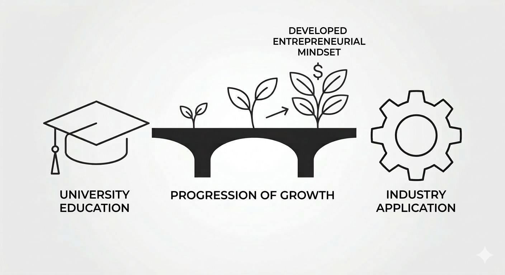
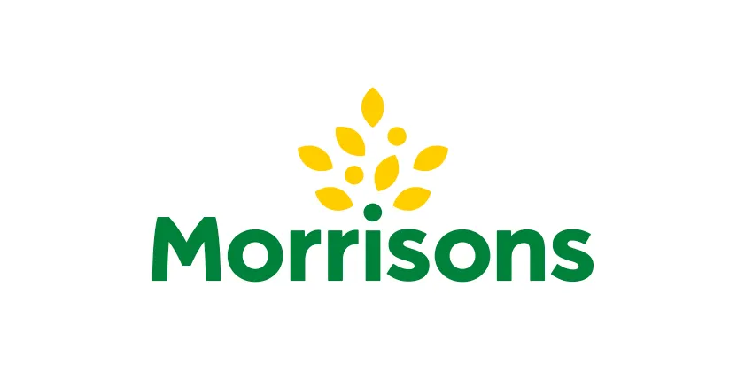

Hợp tác đại học – doanh nghiệp và phát triển tư duy khởi nghiệp của sinh viên
2025 – 2026

Ứng dụng công nghệ Công nghiệp 4.0 cho chuỗi cung ứng bền vững tại Morrisons
2025 – 2026

Đánh giá rủi ro doanh nghiệp: Royal Den Hartogh Logistics Ltd.
2025 – 2026

Chiến lược doanh nghiệp: Danh mục của Tập đoàn Volkswagen
2025

Chiến lược marketing SOSTAC cho Jet2 PLC
2025

Phân tích duy trì thành viên bằng mô hình dự báo rời bỏ đa lớp
2023 – 2024

Quy hoạch tuyến tính ngẫu nhiên cho tối ưu hóa duy trì thành viên
2024

Dự báo giá đóng cửa Bitcoin bằng mạng nơ-ron LSTM
2024

NutriGuide: Chatbot AI gợi ý bữa ăn cá nhân hóa
2024

Phát hiện gian lận Medicare bằng dữ liệu lớn và mô hình học máy
2024

Động thái tuyển sinh trong Khoa Phân tích Kinh doanh
2024

Dự báo nghỉ việc tự nguyện của nhân viên bằng hồi quy logistic
2023

Neuron Entrainment: Mối quan hệ giữa nơ-ron mạng và nơ-ron kích thích xung
2023
Dự báo duy trì sinh viên năm nhất bằng các mô hình phân loại
2023

Thí nghiệm nhân tố: Tác động của luồng khí và nhiệt độ đến thời gian tan chảy
2023

Phân tích dữ liệu và đề xuất về nội dung Netflix
2022

Các yếu tố khác ảnh hưởng thế nào đến chênh lệch lương theo giới trong từng nhóm nghề?
2022

Phân tích thống kê liên năm về mô hình chi tiêu của người tiêu dùng
2022